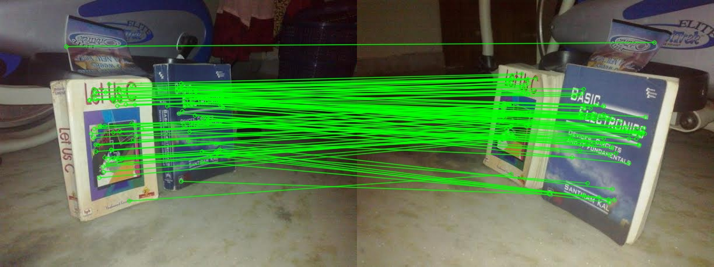

左の画像をクリックすると、対応するエピポーラ線が右の画像に描画されます。
このデモがブラウザ単体で動く背景には、事前の画像処理プロセスがあります。どのように特徴点を検出し、F行列（Fundamental Matrix）を計算したのかを公開します。
まず、左右の画像から SIFT (Scale-Invariant Feature Transform) を用いて特徴点を抽出します。その後、FLANNベースのマッチングを行い、Lowe's ratio test によって信頼性の高いペアだけを残しました。
抽出されたマッチングには誤対応（外れ値）が含まれるため、ロバスト推定手法（今回は LMedS：Least Median of Squares）を用いて正しい対応関係（インライア）のみを抽出しながら、3×3の基礎行列（F行列）を求めました。
以下の画像は、F行列の推定に実際に使われた「インライアのマッチング」を緑色の線で結んだものです。

事前計算で求めたF行列 $F$ は、左右の画像上の対応点 $\mathbf{x}$ と $\mathbf{x'}$ の間に以下の幾何学的な拘束（エピポーラ拘束）を与えます。
ここで、$\mathbf{x} = [x, y, 1]^T$ は左画像でクリックした点の同次座標です。この点に対応する「右画像上のエピポーラ線」$\mathbf{l'}$ は、行列の積で求まります。
この結果得られたベクトル $\mathbf{l'} = [a, b, c]^T$ が、まさに右画像上での直線の方程式を表しています。
この計算なら、JavaScriptでも一瞬です！
このWebアプリでは、ハードコードされたF行列を使って、クリックされるたびにこの l' = F * x の行列演算を行い、Canvas上に直線を引いています。